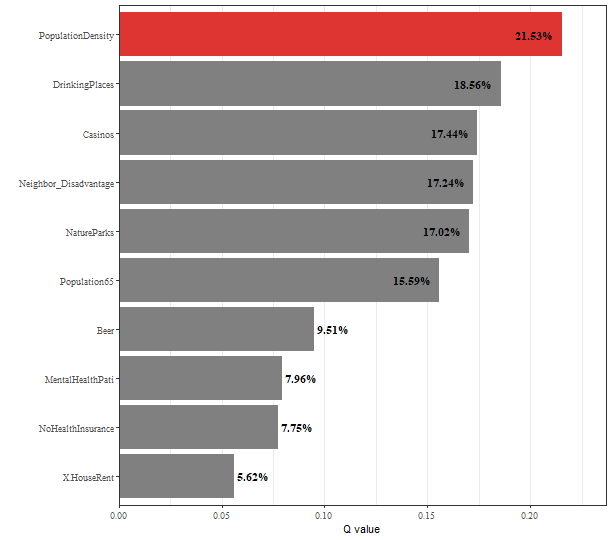

Load data and package
library(sf)
library(tidyverse)
library(gdverse)
depression = system.file('extdata/Depression.csv',package = 'gdverse') %>%
read_csv() %>%
st_as_sf(coords = c('X','Y'), crs = 4326)
depression
## Simple feature collection with 1072 features and 11 fields
## Geometry type: POINT
## Dimension: XY
## Bounding box: xmin: -83.1795 ymin: 32.11464 xmax: -78.6023 ymax: 35.17354
## Geodetic CRS: WGS 84
## # A tibble: 1,072 × 12
## Depression_prevelence PopulationDensity Population65 NoHealthInsurance Neighbor_Disadvantage
## * <dbl> <dbl> <dbl> <dbl> <dbl>
## 1 23.1 61.5 22.5 7.98 -0.0525
## 2 22.8 58.3 16.8 11.0 -0.254
## 3 23.2 35.9 24.5 9.31 -0.0540
## 4 21.8 76.1 21.8 13.2 0.0731
## 5 20.7 47.3 22.0 11 0.763
## 6 21.3 32.5 19.2 13.0 0.422
## 7 22 36.9 19.2 10.8 0.113
## 8 21.2 61.5 15.9 8.57 -0.154
## 9 22.7 67.2 15.7 17.8 -0.320
## 10 20.6 254. 11.3 12.7 0.457
## # ℹ 1,062 more rows
## # ℹ 7 more variables: Beer <dbl>, MentalHealthPati <dbl>, NatureParks <dbl>, Casinos <dbl>,
## # DrinkingPlaces <dbl>, X.HouseRent <dbl>, geometry <POINT [°]>Spatial Autocorrelation of Depression Prevelence
set.seed(123456789)
gmi = sdsfun::moran_test(depression)
gmi
## *** global moran test| Variable | MoranI | EI | VarI | zI | pI |
|---|---|---|---|---|---|
| Depression_prevelence | 0.339557*** | -0.0009337 | 0.0003192 | 19.06 | 2.892e-81 |
| PopulationDensity | 0.365364*** | -0.0009337 | 0.0003192 | 20.5 | 1.052e-93 |
| Population65 | 0.180436*** | -0.0009337 | 0.0003192 | 10.15 | 1.641e-24 |
| NoHealthInsurance | 0.0791199*** | -0.0009337 | 0.0003192 | 4.48 | 3.724e-06 |
| Neighbor_Disadvantage | 0.113811*** | -0.0009337 | 0.0003192 | 6.422 | 6.723e-11 |
| Beer | 0.0902263*** | -0.0009337 | 0.0003192 | 5.102 | 1.68e-07 |
| MentalHealthPati | 0.19318*** | -0.0009337 | 0.0003192 | 10.86 | 8.534e-28 |
| NatureParks | 0.0895589*** | -0.0009337 | 0.0003192 | 5.065 | 2.045e-07 |
| Casinos | 0.243212*** | -0.0009337 | 0.0003192 | 13.66 | 8.28e-43 |
| DrinkingPlaces | 0.239054*** | -0.0009337 | 0.0003192 | 13.43 | 1.97e-41 |
| X.HouseRent | 0.141887*** | -0.0009337 | 0.0003192 | 7.993 | 6.562e-16 |
The global Moran’I Index of Depression Prevelence is
0.339557 and the P value is 2.892e-81, which
shows that Depression Prevelence has a moderate level of positive
spatial autocorrelation in the global scale.
OPGD modeling
depression_opgd = opgd(Depression_prevelence ~ .,
data = depression, cores = 12)
depression_opgd
## *** Optimal Parameters-based Geographical Detector
## Factor Detector
##
## | variable | Q-statistic | P-value |
## |:---------------------:|:-----------:|:------------:|
## | Neighbor_Disadvantage | 0.13979930 | 4.960000e-10 |
## | PopulationDensity | 0.09186679 | 2.328052e-01 |
## | Population65 | 0.08956911 | 1.000000e+00 |
## | NoHealthInsurance | 0.06779068 | 6.479536e-01 |
## | NatureParks | 0.05963161 | 1.000000e+00 |
## | DrinkingPlaces | 0.05411512 | 1.000000e+00 |
## | X.HouseRent | 0.03439383 | 1.000000e+00 |
## | Beer | 0.01410217 | 1.000000e+00 |
## | MentalHealthPati | 0.01295799 | 1.000000e+00 |
## | Casinos | 0.01207694 | 1.000000e+00 |You can access the detailed q statistics by
depression_opgd$factor
depression_opgd$factor
## # A tibble: 10 × 3
## variable `Q-statistic` `P-value`
## <chr> <dbl> <dbl>
## 1 Neighbor_Disadvantage 0.140 4.96e-10
## 2 PopulationDensity 0.0919 2.33e- 1
## 3 Population65 0.0896 1.00e+ 0
## 4 NoHealthInsurance 0.0678 6.48e- 1
## 5 NatureParks 0.0596 1.00e+ 0
## 6 DrinkingPlaces 0.0541 1.00e+ 0
## 7 X.HouseRent 0.0344 1.00e+ 0
## 8 Beer 0.0141 1 e+ 0
## 9 MentalHealthPati 0.0130 1.00e+ 0
## 10 Casinos 0.0121 1 e+ 0Spatial Weight Matrix
SPADE explicitly considers the spatial variance by assigning the weight of the influence based on spatial distribution and also minimizes the influence of the number of levels on PD values by using the multilevel discretization and considering information loss due to discretization.
When response variable has a strong spatial dependence, maybe SPADE is a best choice.
The biggest difference between SPADE and native GD and OPGD in actual modeling is that SPADE requires a spatial weight matrix to calculate spatial variance.
I have also developed the sdsfun package to facilitate the construction of spatial weight matrices, which requires an input of an sf object.
In spade function, when you not provide a spatial weight
matrix, it will use 1st order inverse distance weight
by default, which can be created by
sdsfun::inverse_distance_swm().
wt1 = sdsfun::inverse_distance_swm(depression)You can also use gravity model weight by assigning the
power parameter in
sdsfun::inverse_distance_swm() function.
wt2 = sdsfun::inverse_distance_swm(depression,power = 2)Or using a spatial weight matrix based on geospatial contiguity.
wt3 = sdsfun::spdep_contiguity_swm(depression, k = 8)Or using a spatial weight matrix based on distance kernel functions.
wt4 = sdsfun::spdep_distance_swm(depression, k = 6, kernel = 'gaussian')The test of SPADE model significance in gdverse
is achieved by randomization null hypothesis use a pseudo-p value, this
calculation is very time-consuming. Default gdverse sets
the permutations parameter to 0 and does not calculate the
pseudo-p value. If you want to calculate the pseudo-p value, specify the
permutations parameter to a number such as 99,999,9999,
etc.
In the following section we will execute SPADE model using
spatial weight matrix wt1.
SPADE modeling
depression_spade = spade(Depression_prevelence ~ .,
data = depression,
wt = wt1, cores = 12)
depression_spade
## *** Spatial Association Detector
##
## | variable | Q-statistic | P-value |
## |:---------------------:|:-----------:|:-----------------:|
## | PopulationDensity | 0.21532238 | No Pseudo-P Value |
## | DrinkingPlaces | 0.18564821 | No Pseudo-P Value |
## | Casinos | 0.17438646 | No Pseudo-P Value |
## | Neighbor_Disadvantage | 0.17235706 | No Pseudo-P Value |
## | NatureParks | 0.17019859 | No Pseudo-P Value |
## | Population65 | 0.15592529 | No Pseudo-P Value |
## | Beer | 0.09506759 | No Pseudo-P Value |
## | MentalHealthPati | 0.07956353 | No Pseudo-P Value |
## | NoHealthInsurance | 0.07753293 | No Pseudo-P Value |
## | X.HouseRent | 0.05621546 | No Pseudo-P Value |
plot(depression_spade, slicenum = 6)
You can also access the detailed q statistics by
depression_spade$factor
depression_spade$factor
## # A tibble: 10 × 3
## variable `Q-statistic` `P-value`
## <chr> <dbl> <chr>
## 1 PopulationDensity 0.215 No Pseudo-P Value
## 2 DrinkingPlaces 0.186 No Pseudo-P Value
## 3 Casinos 0.174 No Pseudo-P Value
## 4 Neighbor_Disadvantage 0.172 No Pseudo-P Value
## 5 NatureParks 0.170 No Pseudo-P Value
## 6 Population65 0.156 No Pseudo-P Value
## 7 Beer 0.0951 No Pseudo-P Value
## 8 MentalHealthPati 0.0796 No Pseudo-P Value
## 9 NoHealthInsurance 0.0775 No Pseudo-P Value
## 10 X.HouseRent 0.0562 No Pseudo-P Value